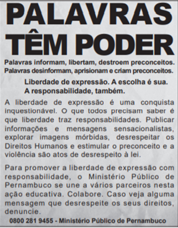

Parabéns, você acertou!!!
Gabarito oficial "b"
O candidato deve notar que a questão se refere à função apelativa ou conativa da linguagem, que consiste em “influenciar o comportamento do destinatário” (MARTELOTTA, 2011, p. 34). Algumas pistas podem ajudar o candidato a resolver a questão: o texto motivador é uma campanha de conscientização sobre liberdade de expressão e responsabilidade; no mesmo texto, aparecem dois verbos no infinitivo (“Colabore” e “denuncie”), uma característica gramatical típica da função conativa; além disso, o enunciado informa que texto tem uma “função social”.
Para saber mais sobre funções da linguagem assista o vídeo da prof Andrea Mota sobre o tema:
Questão 1/10:

Pela análise do conteúdo, constata-se que essa campanha publicitária tem como função social:
(a) propagar a imagem positiva do Ministério Público.
(b) conscientizar a população que direitos implicam deveres.
(c) coibir violações de direitos humanos nos meios de comunicação.
(d) divulgar políticas sociais que combatem a intolerância e o preconceito.
(e) instruir as pessoas sobre a forma correta de expressão nas redes sociais.